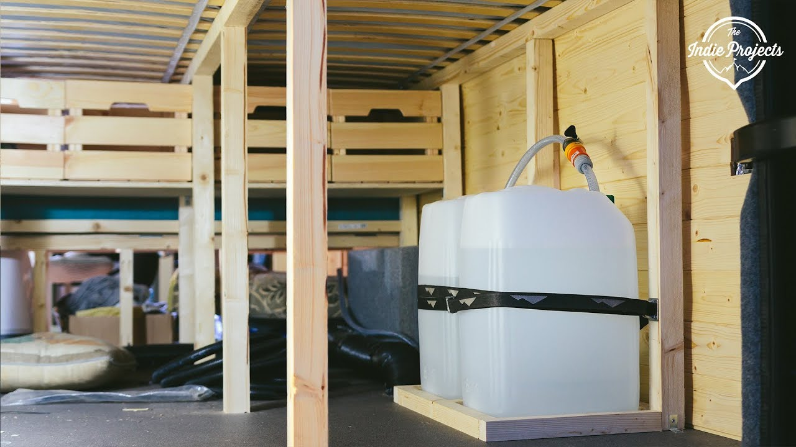
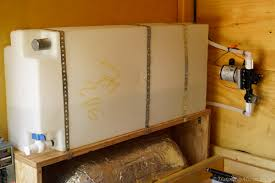

EVERYTHING YOU NEED TO KNOW ABOUT WATERTANK
Before you purchase your water tanks, you need to figure out how big the tanks need to be. The things to consider here are: - How long you want to go before having to empty your grey and black water tanks and re-fill your freshwater. - How much water you would need in that timeframe (drinking, showering, dishes, etc.). - Storage capacity on your van (this depends on where you’re storing your tanks and your van layout. - How much weight you can add to your van along with everything else in your conversion.
Water Tank Placement | Inside vs Outside the Van Most people will mount their tanks on the outside of their van as a way to save on precious interior space. This is exactly what I had done in my first van. The only time this would become a problem is if you plan on doing any winter traveling. Winter climates could lead to freezing in your freshwater tank and pipes if stored underneath the vehicle. This is why I eventually added 2 additional tanks inside the van. (And yes, I still have my grey water going to the outside of the van and will sometimes add anti-freeze to the tank.)